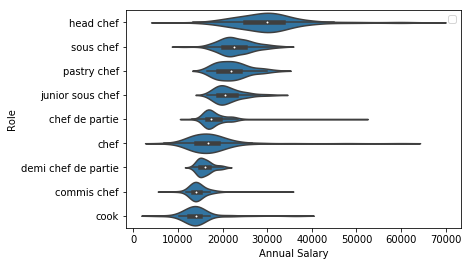
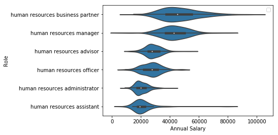
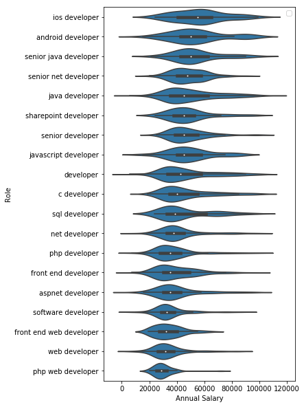
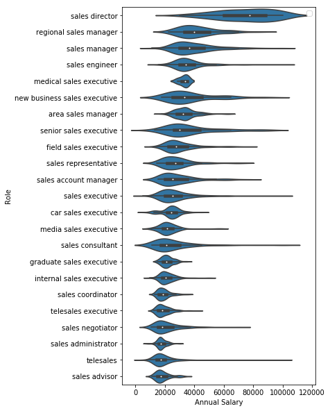
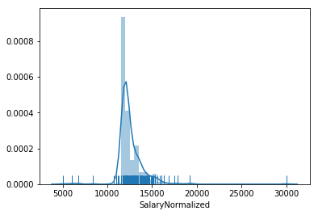

Understaning Job Ad Titles with Salary
Different industries have different ways of distinguishing seniority in a job title. Is a HR Officer more senior than a HR Administrator? Is a PHP web developer more skilled than a PHP developer? How different is a medical sales executive to general sales roles?
Using the jobs from Adzuna Job Salary Predictions Kaggle Competition I’ve found common job titles and can use the advertised salary to help understand them. Note that since the data is from the UK from several years ago a lot of the details aren’t really applicable, but the techniques are.
Chefs and cooks
I don’t know much about different types of chefs but looking at the distributions of salary I can immediately see that a Commis Chef is lower than a Chef de Partie, which is below a Sous Chef, which is below a Head Chef. Reading about the roles on Wikipedia confirms this makes sense.
Notice that the general chef role has quite a broad salary distribution, but it’s generally lines up with roles between a Commis Chef and Chef de Partie; not for a Sous Chef and above.

Human Resources
Human resources has its own terminology for seniority. A quick glance at the salary chart shows an assistant or administrator are about the same level, the bottom rung. Then the next level is an officer or advisor. Finally the top level is a manager or business partner.
There may be differences between an advisor and officer that can’t be seen from advertised salary alone, but it’s easy to see the broad pecking order from the salaries.

Software Developers
Software developers and engineers have a broad range of salaries that doesn’t depend much on their specialisation. To understand the different specialities would require extracting more information from the job ads.
One interesting thing is that web developers tend to be at the bottom of salary and backend and app developers are at the top of salary. This is an evolving space and I imagine has changed a lot even in the types of role titles since 2013.

Sales Professionals
Titles containing the word “sales” really cover a broad range of jobs. However you can see that “internal sales executive” has a lower value than a general “sales executive” and move into more senior roles like “area sales manager”, “sales manager” or “regional sales manager” up to the “sales director”.
Another interesting observational is technical sales roles like “sales engineer” and “medical sales executive” as well as “new business sales executive” comman a much higher salary than generalist sales roles.

Cleaner roles
Looking into the specific role of cleaner they have a very tightly defined salary range around £10,000-13,000. However there are some strange outliers.

It turns out these are anomalies in the underlying dataset. The job with an apparent salary of £30,000 actually has a salary of “6.25 per hour 25 hours per week”. They have parsed this as “6.25-25 per hour”, and averaged and annualised it to 30,000 when it is actually 12,500.
The very low salaries are all for part time work, generally 15 or 20 hours per week, which is why they are much lower. If they were scaled up to full time they would be in the same general range.
Conclusions
Having extracted role titles made this easy to compare over a wide range of roles. The salary can then say something about how roles within an industry relate. One issue is that the developer roles don’t include similar software engineering roles; sometimes similar roles are written very differently. And some roles have a very broad salary where it’s uninformative from the title alone.
It’s also very useful for finding outliers in the data, like in the cleaner example. There’s another example of a “sales manager” role with double the typical salary because the ad is in Australia and the Australian dollar is worth about half a British Pound. This shows it’s actually pretty informative and would be a useful feature if we were actually trying to predict salary like in the competition.
For further details and code see the Jupyter Notebook.